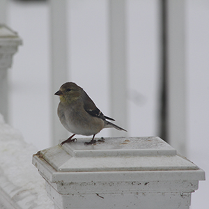

Birdwatching is how you think
In Flight explores how birds are seen, misunderstood, and valued.
Birds are everywhere, but people do not always notice them in the same way. In Flight explores how perception, ecology, and everyday observation shape the way birds are understood. Through pictorials, reviews, maps, and features, the site highlights birding locations across Rutgers and encourages viewers to slow down and look more closely.
Click around...there’s some serious chirp happening
Explore Rutgers Spots

Find beginner-friendly birdwatching areas on Livingston, Busch, College Ave, and Cook/Douglass.
What to Look For

Use pictorial guides to recognize common birds, habitats, and signs of activity around campus.
Bird of the Month

Check out our bird of the month to learn more about birds native to NJ, including their cultural significance!